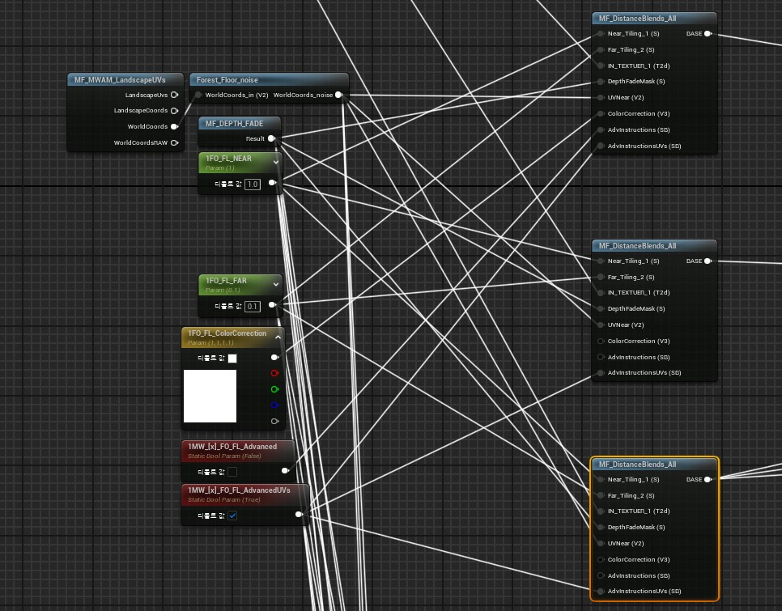
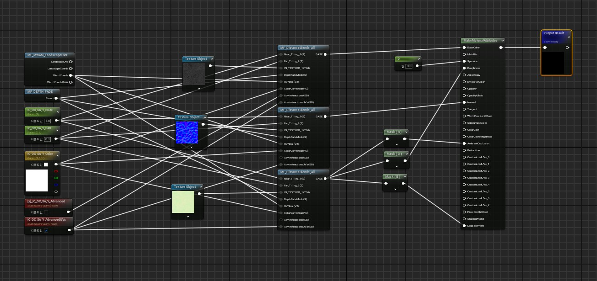
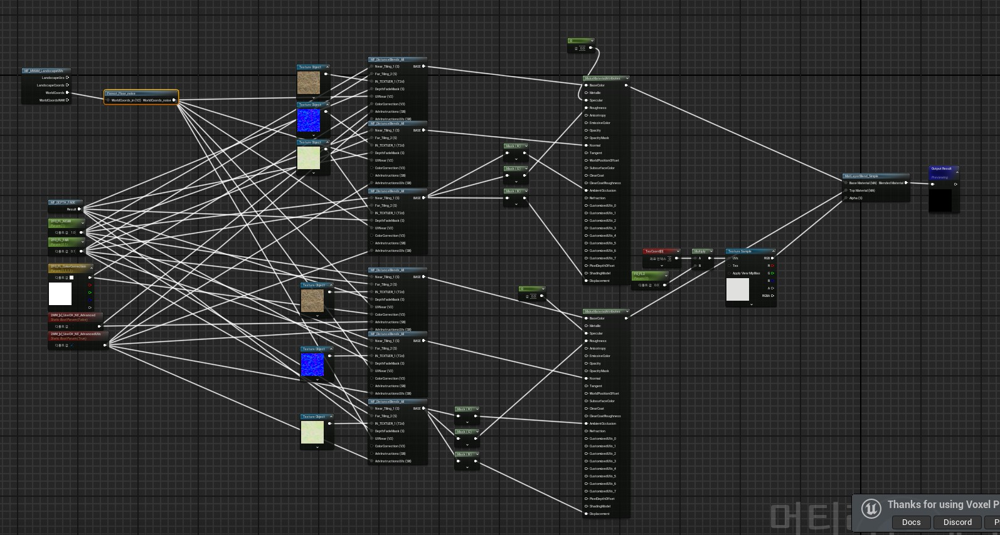

랜드스케이프 초기 텍스처 페인트에서 가장 중요한 점은 머티리얼을 먼저 준비한 뒤 칠을 시작하는 것입니다.
메모 기준으로는 머티리얼이 없으면 텍스처가 무너지고, wrap 설정을 켜야 붓으로 칠하듯 자연스럽게 퍼지는 결과가 나옵니다.
관련 참고 타임코드는 `1:42:33`, `1:48:00`, `2:10:00`이고 영상은 [이 링크](https://youtu.be/V54kqpy1Q-Q?si=uwX8EtLaPrOv_Rf_&t=3778)입니다.

랜드스케이프 초기 텍스처 페인트에서 가장 중요한 점은 머티리얼을 먼저 준비한 뒤 칠을 시작하는 것입니다.
메모 기준으로는 머티리얼이 없으면 텍스처가 무너지고, wrap 설정을 켜야 붓으로 칠하듯 자연스럽게 퍼지는 결과가 나옵니다.
관련 참고 타임코드는 `1:42:33`, `1:48:00`, `2:10:00`이고 영상은 [이 링크](https://youtu.be/V54kqpy1Q-Q?si=uwX8EtLaPrOv_Rf_&t=3778)입니다.

칠이 이상해지는 문제는 해상도 영향이 컸고, 메모에는 8129가 비교적 안정적인 값으로 남아 있습니다.
화이트맵 크기에 따라 달라질 수 있지만, 2x2 섹션과 64 컴포넌트 구성을 기본값처럼 잡는 방식이 작업하기 좋았습니다.
또한 신규 지형을 먼저 생성하고 나중에 임포트를 따로 넣는 쪽이 안전했고, 월드 파티션 리전 크기는 8~16 정도가 관리하기 좋았습니다.

바닥 타일이 자연스럽게 뚫리거나 흙이 채워지는 표현은 브릿지 텍스처 적용과 깊이감 있는 레이어 사용이 핵심이었습니다.
관련 참고 자료는 [자연스럽게 뚫리는 바닥](https://youtu.be/jrJP__JRjEY?si=PDaTNkKxFnv5C4wP), [브릿지 텍스처 기초](https://youtu.be/eW0iLoO6QrM?si=4kHPGYVPbH__lRuT), [기초 설명](https://youtu.be/4xNUC_w68fM?si=HbIHBjhBIsNGTNOf) 순서로 보는 흐름이 좋았습니다.

후반 디테일에서는 GAEA + UE, PCG, 비포장 도로, 자갈 생성, 벽돌벽 파괴 같은 항목들이 따로 메모되어 있었습니다.
특히 PCG는 [기본 설명](https://youtu.be/BqPhdQOweqU?si=gZRhLxnhaPy2ZuOF), [잔디 뭉텅이](https://youtu.be/BIl_16VwXNA?si=LAem56rNkGbeiEQj), [덩굴](https://youtu.be/8seJpPS2fMc?si=KiB_hPUnW5tkwzGl)처럼 목적별로 나눠 정리해두는 편이 좋았습니다.
마지막으로 스태틱 메시는 콜리전 설정을 직접 확인해야 충격과 막힘 반응이 정상적으로 들어갑니다.

기존 페이지의 작업 정리
실제 언리얼 맵 제작에서는 텍스처 페인트용 기본 머티리얼을 먼저 준비한 뒤 지형을 만지는 흐름이 가장 안정적이었습니다.
wrap 설정처럼 메모 기반 팁을 실제 맵 작업에 적용하면 브러시 결과가 훨씬 자연스러워졌고, 해상도와 컴포넌트 구성을 초반에 고정해두는 것이 반복 수정 비용을 줄였습니다.

신규 지형 생성 후 별도 임포트, 월드 파티션 리전 크기 조정, 도로와 바닥 타일의 분리된 접근처럼 기존 `index.html`에 있던 실작업 포인트도 그대로 유효합니다.
바닥이 자연스럽게 뚫리거나 흙이 차오르는 연출은 브릿지 텍스처와 깊이감 있는 레이어 조합을 실제 레벨 안에서 검증하면서 다듬는 편이 결과가 좋았습니다.

큰 방향은 GAEA와 UE 조합으로 잡고, 이후 디테일은 PCG와 개별 메시에 맡기는 흐름이 효율적이었습니다.
즉, 이 문서는 옵시디언 메모에서 정리한 기준값과 실제 포스트에 있던 구현 경험을 합친 버전으로 보면 됩니다.